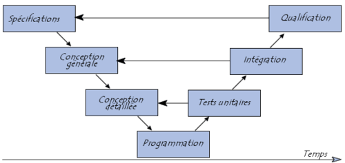
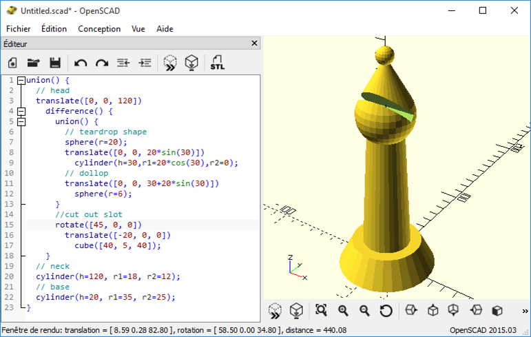

Mon équipe se focalise sur
la valeur métier
... grâce au code

< nous />
Il était une fois
Une équipe réalisant du logiciel
Qui voulait livrer de la valeur métier
aussi fréquemmentque possible
Chapitre 0
Le roi est mort
Dans les années 90
- Livraisons tous les ~ 2 ans
- Avec + ou - de succès

Un royaume assiégé
- Innovation
- Incertitudes métiers
- Incertitudes techniques
- Marché évoluant de + en + vite
- Obsolescence des besoins initiaux
XP ou Scrum
À la rescousse
- Découpage des besoins
- En usage métiers indépendants
- Livraisons fréquentes
- Validation continue
- Repriorisation continue
Chapitre I
Pas si facile d'être le nouveau roi

Recette
- Comment faire une recette d’un mois…
- …toutes les 2 semaines
Automatisation des tests !
- Gain de temps
- Reproductible
- …
D'autres problèmes lors des livraisons


"Ça marche si je livre depuis mon poste !"
Industrialisation (XP)
- Gestion de source
- Automatisation du build
- Depuis la gestion de source
- Sur un serveur neutre
Bénéfices
- Livraisons
- Plus facile = plus fréquentes
- Plus fiable = se consacrer à la valeur métier
1995 : Youpi !
- Livraison de valeur métier
- Passe de 2 ans à 2 semaines !

Chapitre II
Un nouveau roi, de nouveaux problèmes

Livrer à la fin de chaque itération
- Tout ce qui marche
- Rien que ce qui marche
Cohérence du livrable ?
- Quel code ?
- Quel schéma de BDD ?
Réunir !
- Branche de code par fonctionnalité métier
- Inclure
- Code de l'application
- Scripts d'évolution de la BDD
Bénéfices
- Meilleure interaction dev/ops
- Cohérence de la BDD avec le code
- Reproductible
- …

Les années passèrent paisiblement, puis …
Chapitre III
Remise en question du roi

2 semaines ?
- Anomalie urgente en production
- Fonctionnalité validée en cours d'itération
- Pourquoi attendre 2 semaines ???
- Spotify, GAFA, NATU, ...
Enjeu
- Reproduire
- Le succès 2 ans -> 2 semaines
- En succès 2 semaines -> 2 heures

Solutions
- Métier
- Kanban
- Technique
- ?
Délai pour déployer et gérer les environnements
- Différences dév. et prod.
- Quelles dépendances installées ?
- Dans quelles versions ?
- Etc
Outils de provisionning
- Fichier décrivant l'environnement cible
- Simple déclaration
- Applicable automatiquement sur un serveur
- Présent avec le code dans la branche de gestion de version
- Cohérence
Bénéfices
- Gain de temps
- Interaction dev/ops améliorée
- Cohérence des environnements avec le code
- …
Youpi !
- Livraison de valeur métier
- Passe de 2 semaines à 2 heures !

The end
Ils vécurent heureux avec pleins de petits incréments
Épilogue
Morale de l'histoire
Ce qu'on a vu
- Pratiques variées
- Bénéfices proches
Bénéfices rencontrés dans l'histoire ?
- Les bénéfices intrinsèques au code !
Sens de l'Histoire
- De : projet d'une seule traite
- Vers : projet itératif et incrémental
- Implique : augmentation de la répétition des tâches
Boucle d'apprentissage

Boucle d'apprentissage

Sens de l'Histoire
- Répétition des tâches
- Implique : Automatisation
- Implique : Code
De plus en plus de code pour plus d'impact métier
- Exemple
- Le changement stratégique de l'administration des outils Microsoft
Pratiques basées sur le code ?
2 axes de lectures
- Quelles pratiques ?
- Quels bénéfices communs ?
Code ?
- Fichier texte
- Langages exécutables
- Programmation (Java, C#, Bash, ...)
- Déclaratifs (xml, json, ...)
Specification As Code

From Specification By Example by Gojko Adzic.

Documentation as code
- Doc métier
- Doc technique
- Doc utilisateur
Living Documentation
- Spécifications exécutables / Résultats de tests
- Annotations métier dans le code
- Glossaire
- Schéma
- Et plein d'autres choses
- https://leanpub.com/livingdocumentation - Cyrille Martraire
Markdown

From https://mastercaweb.u-strasbg.fr/rediger-web-markdown/
Asciidoc

Swagger

Bénéfices du code
Communs à toutes les pratiques
directement ou indirectement,
tout bénéfice se traduit
en gain de temps
Automatisation
- La 1ère fois coûte plus cher
- Les suivantes sont quasi gratuites
- Plus rapide = plus souvent = plus de feedback
- Permet de passer à l'échelle
Attention à garder la maitrise !

Pas d’automatisation
- Installer à la main chaque machine virtuelle

“Automatisation” sans code
- Utiliser une copie d'une VM installée à la main
- Besoin de la recréer (changement d’OS, etc)
- "Comment on avait installé la première VM déjà ?"
Automatisation par le code
- Provisionning par fichier déclaratif
"Autonomation"
- Ne pas remplacer l'humain
- Faire des super-humains
Les ordinateurs sont bêtes
Et ça, c'est bien
Un ordinateur
- Ça fait exactement ce qu’on lui dit
- Mais il faut être précis
- Sinon il prévient
syntax error
Les humains sont intelligents et inattendus
Et ça, c'est pas si bien
Incertitudes
- Ambiguïté ?
- Il corrigera parfois le tir, en bien ou en mal
- Pas d'ambiguïté ?
- Il ne le suivra peut-être pas
- À tort ou à raison
- Il ne nous préviendra pas forcément
- “C’est évident !”
- “J'ai oublié de te dire, mais ...”
Le code documente
Véracité des informations
- Doc sujet à interprétation
- Le code ne ment pas
Pérennité des informations
- La documentation papier
- Vite obsolète
- Chère
Pérennité des informations
- Anecdote
- Mise en place d’un environnement de dev pour firmware de clavier
- Tous les 2 ans
- J’oubli !
Pérennité des informations
Dockerfile à la rescousse
FROM debian:7.11
RUN apt-get update && apt-get install -y \
make \
gcc-avr \
avr-libc
[…]
ADD src /src
[…]
CMD make"Mais, une doc c'est censé être lisible !"
Attention
Un code obscur n’a jamais rien documenté !
Code clair et lisible
- Bien choisir ses outils
- HTML vs. AsciiDoc
- Bash vs. Puppet
- Clean Code !
- Manifeste Agile
- Une attention continue à l'excellence technique et à une bonne conception renforce l’Agilité.
Le code est versionnable
Validation métier = intégration simultanée de
- Code de l’application
- Schéma de BDD
- Tests
- Documentation technique
- Documentation métier
- Infrastructure
- etc
Auditabilité
- Suivi de toutes les modifications
- Suivi des liens entre les éléments
- Quelle version du code avec quelle version de l'infra ? etc
Déterminisme
- À contexte identique, l’ordinateur refera tout le temps la même chose
Modularité
- Exemple de la chaîne de déploiement
- Automatisation de
- la compilation
- le déploiement
- l’installation des prérequis sur la machine virtuelle
- la création de la machine virtuelle
- la mise en place de l’infrastructure complète
- Et demain ?
- Automatisation de
Sum up
- Gain de temps
- Informations
- Partagées
- Véridiques
- Pérennes
- Auditables
- Déterministe
- Fusionnables et livrables par incréments cohérents
Pourquoi c’est important ?
- Se concentrer sur le métier
Pratiques basées sur le code
ALL THE THINGS As Code

All the things ?
- Spec
- Build
- Test
- Deliver
- Et plus encore
Déjà vu
- Spécifications exécutables
- Documentation
- Mise à jour de la base de données
Build
- Chaîne de compilation
- Intégration continue (Jenkins)
- Job
- Pipeline (enchaînement de jobs)
stage('Checkout'){
checkout scm
}
stage('Test'){
sh 'npm test'
}
stage('Build Docker'){
sh './dockerBuild.sh'
}
stage('Deploy'){
echo 'Push to Repo'
sh './dockerPushToRepo.sh'
}

Tests unitaires

Tests intégrations
- Exemple Mobilité : Xamarin Test Cloud
Delivery
- Puppet, ansible, saltstack
- Docker
Certificats HTTPS
- Let’s encrypt
Modélisation 3D
Slides
Titre
- Item 1
- Item 2
Conclusion
Conclusion
- Plus rapide
- Plus fiable
- Plus de temps consacré à la valeur métier !
Conclusion
- Chaque déploiement est
- Une opportunité de feedback
- Un apport de flexibilité pour tous
- 2ans -> 2Semaines -> 2Heures grâce au "As Code"
- Mettre en prod dès le début